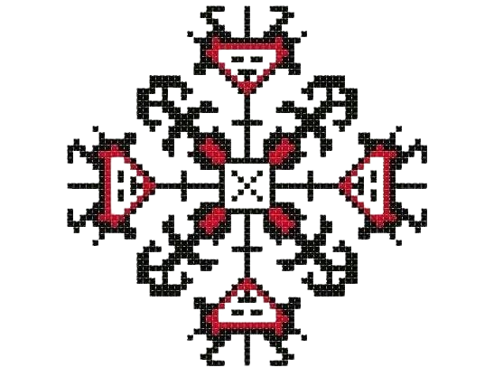

През последните години работих усилено, за да достигна това ниво, на което съм сега в народните танци. С тях се занимавам от 11 години вече, общо взето откакто се помня все съм бил свързан по някакъв начин. По сериозно почнах да се развивам откакто започнах да играя в един ансамбъл, ако мога така да го нарека в с. Тополи. Този ансамбъл вече го няма. Оттам си тръгнах понеже в групата, в която играх бяха много по-големи от мен и един ден просто ми казаха, че трябва или да се преместя в по-малката и начинаеща група или да си намеря друго място където да играя. И аз реших да се махна просто, за което не съжалявам вече. След известно време с помощта на родителите ми намерих ДТА “Българче”, където до скоро танцувах. Там общо взето се научих на почти всичко, което мога и намерих много и много важни приятелства. С този ансамбъл съм посетил много съседни страни като Гърция, Македония, Сърбия и Турция. След това понеже отпреди паралелно с ансамблите ходих с майка ми и в клуб за хора, откъдето съм научил и страшно много хора, първият клуб, в който ходихме се разпадна и по-късно майка ми започна да ходи в Клуб за народни танци “Моряците”, но без мен. Дълго време тя ме караше да идвам с нея, но аз все и отказвах. Преди година обаче реших да отида един път отново, да си припомня какво беше преди и се зарибих отново. След това ме забелязаха ръководителите и решиха да ме вкарат и в ансамбъла им. От тогава съм помагал за измисляне на танци и съм участвал и в пресъздаването на обичаи. Освен танцуването, също така съм се учил сам и да свиря на тъпан, като участвах в тазгодишното изпращане на 12 клас в моето училище. След време мисля да превърна танците и в моя професия макар и да не е основна, като може да отида да уча в академията в Пловдив. От сравнително скоро също започнах и да тренирам айкидо в Шисейкан Айкидо доджо понеже исках да намеря бойно изкуство с цел самозащита и да мога да защитя близките си при нужда. Там също се запознах с много нови хора и приятели. Също така и се научих на много техники и състояния на тялото ако мога така да се изразя и има още супер много, на които ще се науча.
Здравейте
Аз съм Тихомир
